Aplicar las estructuras de selección, mediante la propuesta de soluciones, para resolver problemas de ingeniería donde se requiere la toma de decisión, con una actitud analítica, propositiva y responsable.
Algoritmo / FinAlgoritmo, sangría y punto y coma en las sentencias Definir;, Leer;, asignaciones y Escribir;.3.1 · SELECCIÓN SIMPLE
La selección simple se utiliza cuando solo necesitamos ejecutar instrucciones si una condición resulta verdadera. Si la condición es falsa, no sucede nada dentro del bloque y el algoritmo continúa con la siguiente instrucción.
¿Cómo funciona?
Esta estructura revisa una sola condición. Si se cumple, entra al bloque del Si y ejecuta las instrucciones. Si no se cumple, simplemente pasa de largo. Es útil cuando solo queremos realizar una acción en un caso específico, sin necesitar una alternativa explícita.
Analogía
Imagina una puerta automática que solo se abre si detecta movimiento. Si hay movimiento, la puerta se abre; si no hay movimiento, la puerta permanece cerrada. No hay una segunda acción: únicamente se ejecuta algo cuando la condición es verdadera.
Si condicion Entonces
// instrucciones
FinSi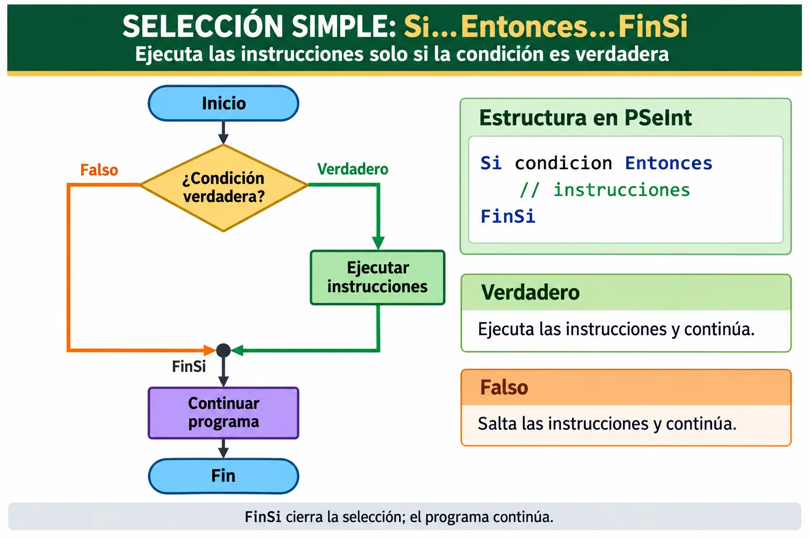
//PEDRO NUÑEZ YEPIZ MATR: 300523
//DESCR: SELECCIONES SIMPLES CONSECUTIVAS - MAYOR O MENOR DE EDAD
//FECHA: 11 OCTUBRE 2026
Algoritmo NYP_ACT3_01
Definir edad Como Entero;
Escribir "INGRESA TU EDAD: ";
Leer edad;
Si edad >= 18 Entonces
Escribir "ES MAYOR DE EDAD";
FinSi
Si edad < 18 Entonces
Escribir "ES MENOR DE EDAD";
FinSi
FinAlgoritmo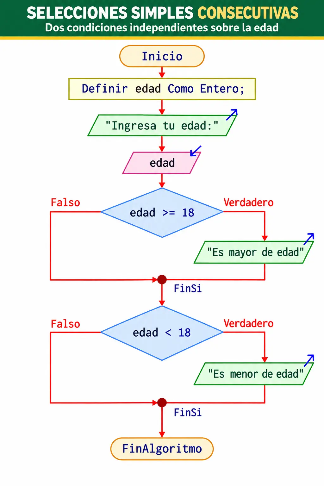
Explicación del ejemplo
En este ejemplo se leen los datos de la variable edad y después se revisan dos condiciones independientes. La primera valida si la edad es mayor o igual a 18; si lo es, se escribe que la persona es mayor de edad. Después, el algoritmo sigue y evalúa una segunda condición distinta: si la edad es menor de 18, escribe que es menor de edad.
Aunque el problema parece sencillo, este ejemplo permite ver con claridad que una selección simple no obliga a tener un camino alterno. Cada condición se revisa por separado. Es como pasar por dos filtros consecutivos: el primero pregunta “¿ya es mayor de edad?” y el segundo pregunta “¿todavía es menor de edad?”. Solo se ejecuta el mensaje que corresponda.
3.2 · SELECCIÓN DOBLE
La selección doble permite elegir uno de dos caminos excluyentes: si la condición es verdadera se ejecuta un bloque, y si es falsa se ejecuta otro.
¿Cómo funciona?
En esta estructura el algoritmo siempre toma una decisión entre dos alternativas. La condición se evalúa una sola vez, pero el resultado determina si se sigue el camino verdadero o el camino falso. Es muy útil cuando el problema exige una respuesta obligatoria entre dos opciones.
Analogía
Piensa en un interruptor de luz. Solamente tiene dos estados: encendido o apagado. No existe una tercera posibilidad. De forma parecida, en una selección doble el algoritmo decide entre dos rutas claramente definidas.
Si condicion Entonces
// camino verdadero
SiNo
// camino falso
FinSi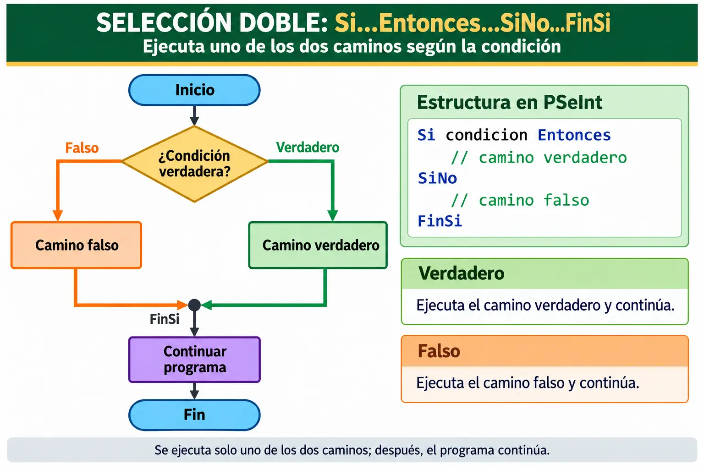
//PEDRO NUÑEZ YEPIZ MATR: 300523
//DESCR: SELECCION DOBLE - NUMERO PAR O IMPAR
//FECHA: 11 OCTUBRE 2026
Algoritmo NYP_ACT3_02
Definir numero Como Entero;
Escribir "DAME UN NUMERO ENTERO: ";
Leer numero;
Si numero MOD 2 = 0 Entonces
Escribir "PAR";
SiNo
Escribir "IMPAR";
FinSi
FinAlgoritmo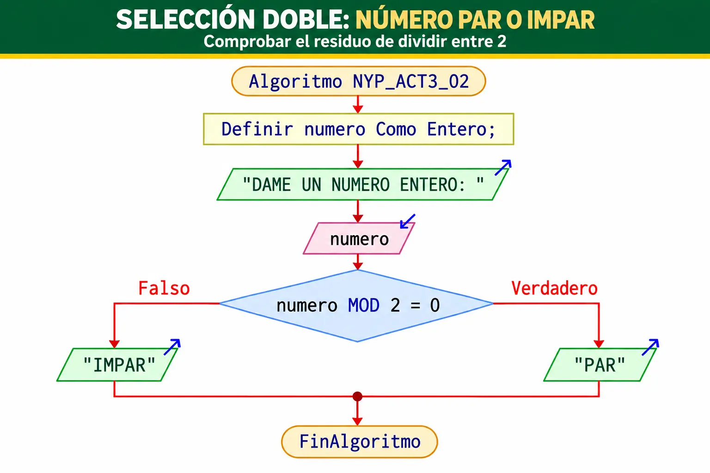
Explicación del ejemplo
El algoritmo solicita un número entero y revisa si al dividirlo entre 2 el residuo es cero. Esa operación se hace con MOD. Si el residuo es cero, el número es par; en caso contrario, es impar.
Este ejemplo es un clásico porque muestra muy bien la idea de “uno u otro”. El número no puede ser par e impar al mismo tiempo, así que la selección doble resulta ideal. Es como revisar una moneda: o cae del lado de cara o cae del lado de cruz; siempre habrá solo un resultado.
3.3 · SELECCIÓN MÚLTIPLE
La selección múltiple con Segun...Hacer...FinSegun se usa cuando una variable puede tomar varios valores y cada valor debe activar una acción distinta.
¿Cómo funciona?
En lugar de preguntar varias veces con Si...SiNo, esta estructura compara el valor de una variable con diferentes opciones. Cuando encuentra coincidencia, ejecuta el bloque correspondiente. Si ninguna opción coincide, puede utilizarse De Otro Modo para atender el caso no contemplado.
Analogía
Imagínala como el menú de una cafetería automática. Presionas el botón 1 y obtienes café; presionas el 2 y obtienes té; presionas el 3 y obtienes chocolate. Cada opción representa una respuesta distinta según el valor ingresado.
Segun variable Hacer
1:
// instrucciones opcion 1
2:
// instrucciones opcion 2
De Otro Modo:
// opcion no contemplada
FinSegun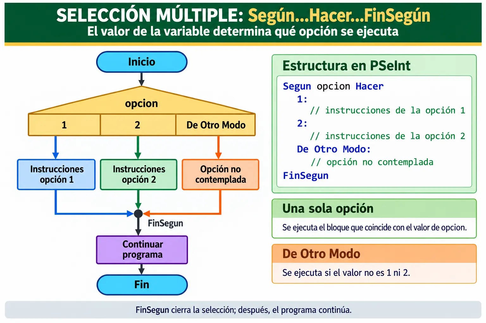
//PEDRO NUÑEZ YEPIZ MATR: 300523
//DESCR: SELECCION MULTIPLE - CALCULADORA BASICA
//FECHA: 11 OCTUBRE 2026
Algoritmo NYP_ACT3_03
Definir num1, num2, resultado Como Real;
Definir opcion Como Entero;
Escribir "DAME EL PRIMER NUMERO: ";
Leer num1;
Escribir "DAME EL SEGUNDO NUMERO: ";
Leer num2;
Escribir "1.- SUMA";
Escribir "2.- RESTA";
Escribir "3.- MULTIPLICACION";
Escribir "4.- DIVISION";
Leer opcion;
Segun opcion Hacer
1:
resultado = num1 + num2;
Escribir "RESULTADO = ", resultado;
2:
resultado = num1 - num2;
Escribir "RESULTADO = ", resultado;
3:
resultado = num1 * num2;
Escribir "RESULTADO = ", resultado;
4:
Si num2 <> 0 Entonces
resultado = num1 / num2;
Escribir "RESULTADO = ", resultado;
SiNo
Escribir "NO SE PUEDE DIVIDIR ENTRE CERO";
FinSi
De Otro Modo:
Escribir "OPCION NO VALIDA";
FinSegun
FinAlgoritmo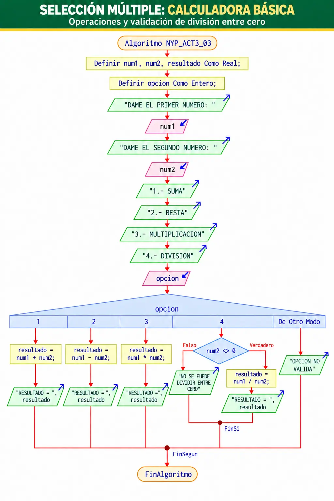
Explicación del ejemplo
En este algoritmo se leen dos números y luego se muestra un pequeño menú de operaciones. El valor que el usuario escribe en opcion determina qué bloque se ejecutará. Si elige 1, se realiza una suma; si elige 2, una resta; si elige 3, una multiplicación; y si elige 4, se intenta una división.
Observa que en la opción 4 aparece una validación adicional para evitar dividir entre cero. Esto demuestra que dentro de una selección múltiple también pueden colocarse otras estructuras. Una buena analogía es la de una calculadora de bolsillo: primero seleccionas la operación y después el equipo hace el trabajo específico que corresponde a esa tecla.
3.4 · ANIDACIÓN
La anidación ocurre cuando una estructura de selección contiene otra estructura en su interior. Esto permite tomar decisiones más detalladas, paso a paso.
¿Cómo funciona?
Primero se evalúa una condición principal. Dependiendo del resultado, el algoritmo entra a un bloque donde puede existir otra condición interna. De esta manera, la segunda decisión depende de la primera. La regla importante es que la estructura interna debe cerrarse antes que la externa.
Analogía
Es parecido a pasar por filtros de acceso en un edificio. Primero te preguntan si puedes entrar al edificio; después, ya dentro, te preguntan a qué área deseas pasar. No tendría sentido preguntar por la oficina si antes no se autorizó el acceso general.
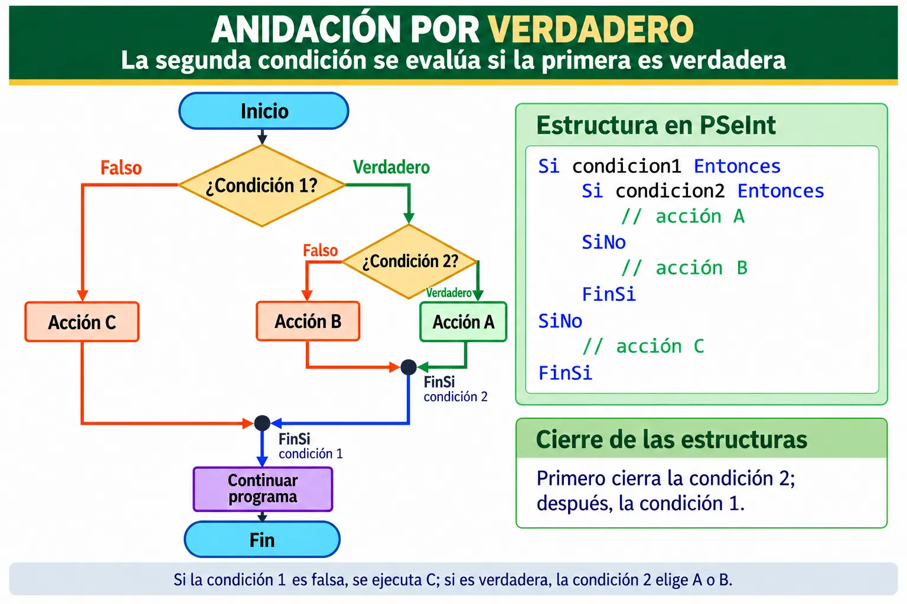
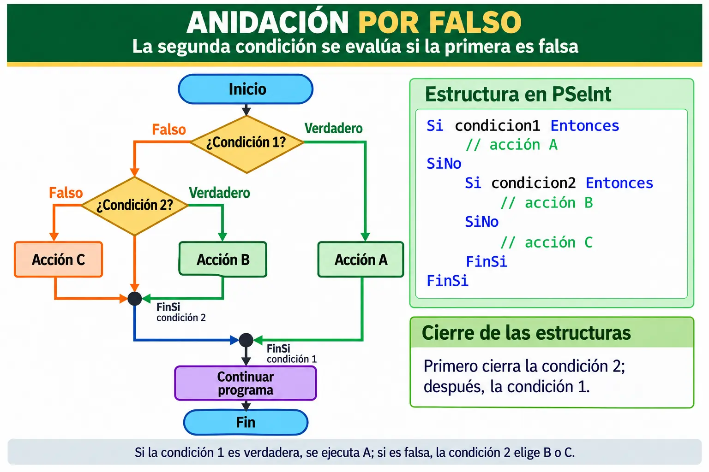
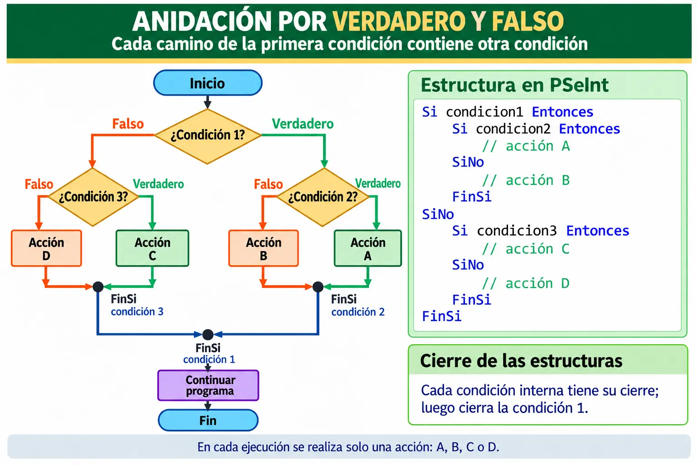
Si condicion1 Entonces
Si condicion2 Entonces
// accion A
SiNo
// accion B
FinSi
SiNo
// accion C
FinSiEjemplo · NYP_ACT3_04 · Anidación por verdadero
//PEDRO NUÑEZ YEPIZ MATR: 300523
//DESCR: ANIDACION POR VERDADERO
//FECHA: 11 OCTUBRE 2026
Algoritmo NYP_ACT3_04
Definir edad Como Entero;
Definir tieneIdentificacion Como Logico;
Escribir "DAME LA EDAD: ";
Leer edad;
Escribir "TIENE IDENTIFICACION (Verdadero/Falso): ";
Leer tieneIdentificacion;
Si edad >= 18 Entonces
Si tieneIdentificacion = Verdadero Entonces
Escribir "PUEDE REALIZAR EL TRAMITE";
SiNo
Escribir "FALTA IDENTIFICACION";
FinSi
SiNo
Escribir "ES MENOR DE EDAD";
FinSi
FinAlgoritmo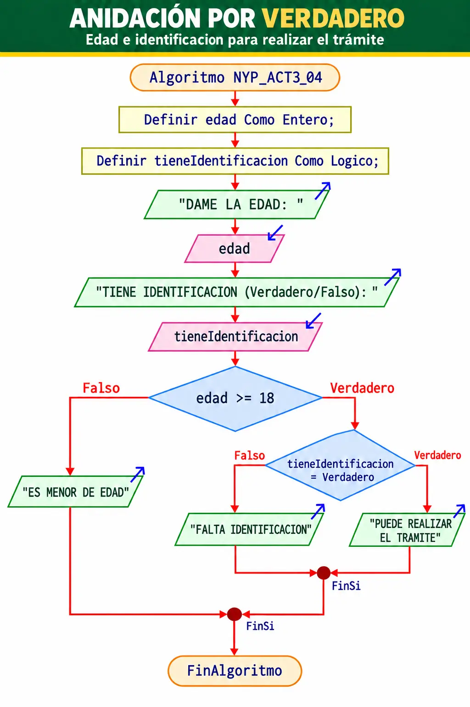
Explicación del ejemplo
Este algoritmo primero revisa si la persona tiene la edad suficiente. Solo si cumple con esa condición entra a una segunda validación: comprobar si tiene identificación. Eso significa que la segunda decisión depende de la primera.
La lógica es parecida a un trámite real: primero confirmas que la persona sea mayor de edad; después verificas si lleva su identificación. Si no cumple el primer requisito, ya no hace falta revisar el segundo. Esa es justamente la ventaja de una anidación por verdadero.
Ejemplo · NYP_ACT3_06 · Anidación por verdadero y falso
//PEDRO NUÑEZ YEPIZ MATR: 300523
//DESCR: ANIDACION POR VERDADERO Y FALSO
//FECHA: 11 OCTUBRE 2026
Algoritmo NYP_ACT3_06
Definir esAdmin, activo, visitante Como Logico;
Escribir "ES ADMINISTRADOR (Verdadero/Falso): ";
Leer esAdmin;
Si esAdmin = Verdadero Entonces
Escribir "CUENTA ACTIVA (Verdadero/Falso): ";
Leer activo;
Si activo = Verdadero Entonces
Escribir "PANEL DE ADMINISTRACION";
SiNo
Escribir "CUENTA DESACTIVADA";
FinSi
SiNo
Escribir "ES VISITANTE (Verdadero/Falso): ";
Leer visitante;
Si visitante = Verdadero Entonces
Escribir "PAGINA PUBLICA";
SiNo
Escribir "ACCESO RESTRINGIDO";
FinSi
FinSi
FinAlgoritmo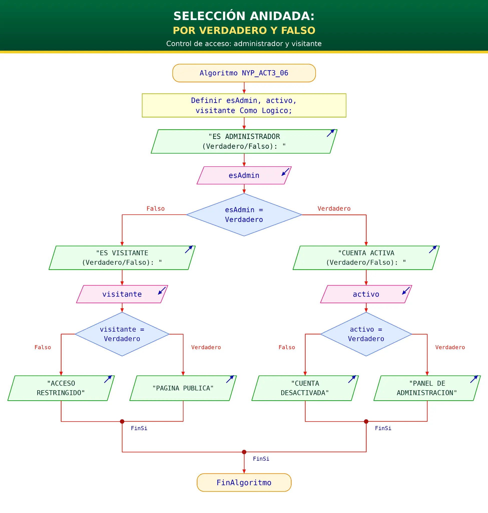
Explicación del ejemplo
Aquí la primera pregunta es si el usuario es administrador. Si la respuesta es verdadera, el algoritmo entra a un segundo filtro para comprobar si la cuenta está activa. Si la primera respuesta es falsa, se sigue otro camino en el que se revisa si el usuario es visitante. Cada rama tiene su propia condición interna.
Esta estructura es útil cuando ambos caminos necesitan más detalle. Una analogía sencilla es la entrada de un sistema: si eres administrador, te revisan permisos administrativos; si no lo eres, te revisan permisos de visitante. En ambos casos existe una segunda validación.
CASCADAS DE DECISIÓN
Las cascadas aparecen cuando varias condiciones se evalúan en secuencia. Dependiendo de cómo estén acomodadas, la evaluación continúa por falso o por verdadero.
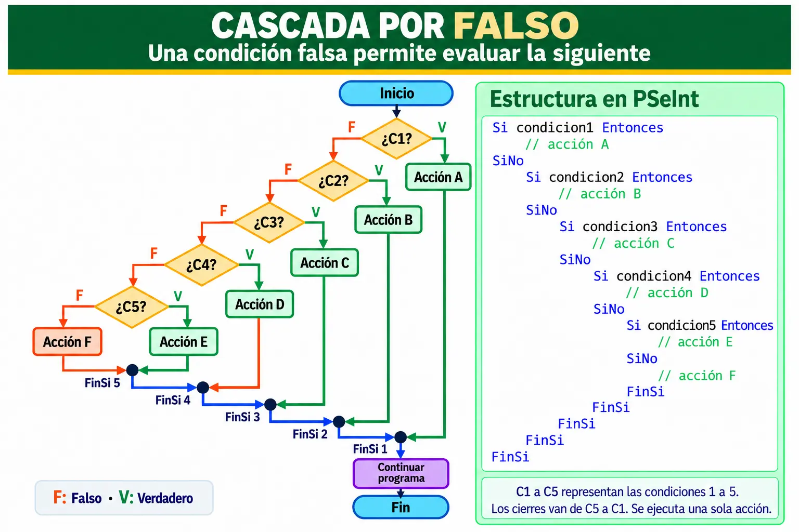
Cascada por falso
En una cascada por falso, cuando una condición no se cumple, el algoritmo baja al siguiente nivel para revisar otra posibilidad. Es muy parecida a clasificar un alumno: si no obtuvo 100, entonces se revisa si al menos aprobó; si tampoco aprobó, se concluye que reprobó.
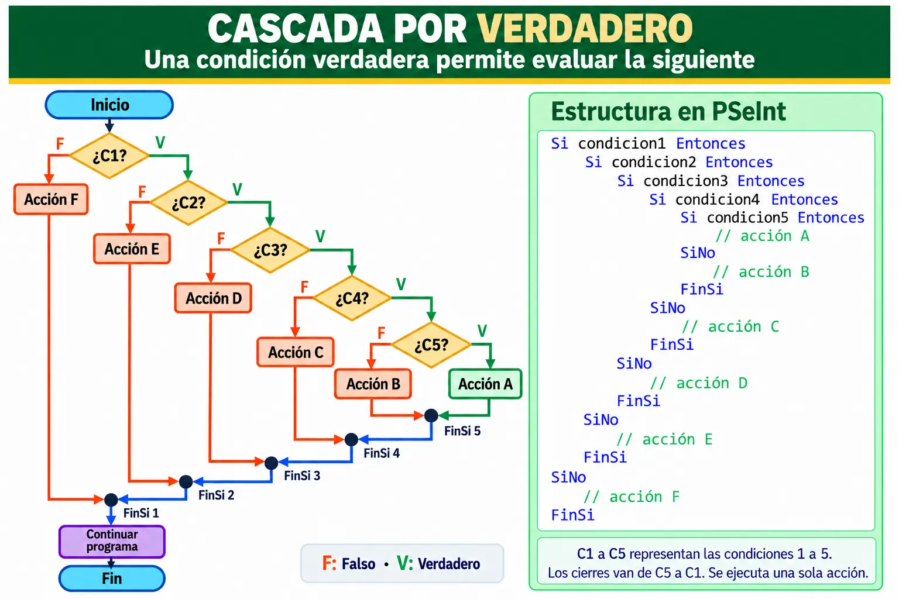
Cascada por verdadero
En la cascada por verdadero sucede lo contrario: si una condición se cumple, el algoritmo entra a revisar otra más. Es como abrir una serie de puertas de seguridad: solo si la primera se abre puedes llegar a la segunda, y solo si la segunda se abre puedes llegar a la tercera.
SELECCIÓN MÚLTIPLE ANIDADA
Una selección múltiple anidada ocurre cuando una opción de una estructura Segun...Hacer contiene otra estructura de decisión, como otro Segun o un Si...SiNo. Esto permite organizar problemas con varios niveles de opciones sin perder claridad.
¿Cómo funciona?
Primero se evalúa la variable del Segun principal. Cuando el valor coincide con una opción, se entra solamente a ese bloque. Dentro de ese bloque puede existir una segunda decisión que se evalúa después.
La regla más importante es que cada estructura interna debe cerrarse antes de cerrar la estructura externa. Si dentro de una opción existe otro Segun, primero aparece su FinSegun; si existe un Si, primero aparece su FinSi. Al final se cierra el Segun principal.
Analogía
Imagina el menú de un cajero automático. Primero eliges una categoría general, por ejemplo Consultas, Operaciones o Configuración. Si eliges Consultas, aparece un nuevo menú con Saldo, Movimientos o Estado de cuenta. La segunda decisión solo existe después de haber elegido la primera opción.
Sintaxis en PSeInt
Segun opcion Hacer
1:
Segun subopcion Hacer
1:
// accion A;
2:
// accion B;
De Otro Modo:
// accion C;
FinSegun
2:
// instrucciones de la opcion 2;
3:
Si condicion Entonces
// accion D;
SiNo
// accion E;
FinSi
De Otro Modo:
// opcion no contemplada;
FinSegunCómo leer la sintaxis
El Segun opcion Hacer es la decisión principal. En la opción 1 aparece otro Segun, por lo que se crea un segundo nivel de selección. En la opción 3 aparece una estructura Si...SiNo, demostrando que una selección múltiple puede contener otro tipo de estructura de decisión.
Observa el orden de cierre: primero se cierra la estructura más interna y después la externa. Este comportamiento es semejante a guardar cajas dentro de otras cajas: para cerrar la caja grande primero hay que cerrar correctamente la caja pequeña que está dentro.
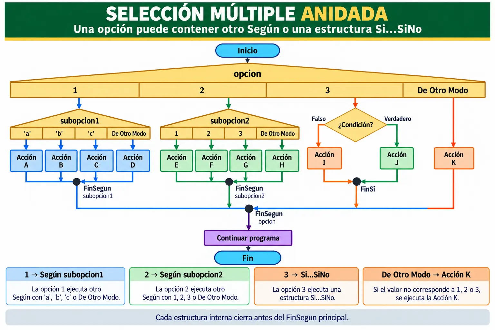
Ejemplo en PSeInt
//PEDRO NUÑEZ YEPIZ MATR: 300523
//DESCR: SELECCION MULTIPLE ANIDADA
//FECHA: 11 OCTUBRE 2026
Algoritmo NYP_ACT3_09
Definir opcion, subopcion Como Entero;
Definir condicion Como Logico;
Escribir "1.- SUBMENU A";
Escribir "2.- SUBMENU B";
Escribir "3.- VALIDAR CONDICION";
Leer opcion;
Segun opcion Hacer
1:
Escribir "1.- ACCION A";
Escribir "2.- ACCION B";
Escribir "3.- ACCION C";
Leer subopcion;
Segun subopcion Hacer
1:
Escribir "ACCION A";
2:
Escribir "ACCION B";
3:
Escribir "ACCION C";
De Otro Modo:
Escribir "SUBOPCION NO VALIDA";
FinSegun
2:
Escribir "1.- ACCION E";
Escribir "2.- ACCION F";
Escribir "3.- ACCION G";
Leer subopcion;
Segun subopcion Hacer
1:
Escribir "ACCION E";
2:
Escribir "ACCION F";
3:
Escribir "ACCION G";
De Otro Modo:
Escribir "ACCION H";
FinSegun
3:
Escribir "DAME LA CONDICION (Verdadero/Falso): ";
Leer condicion;
Si condicion = Verdadero Entonces
Escribir "ACCION J";
SiNo
Escribir "ACCION I";
FinSi
De Otro Modo:
Escribir "ACCION K";
FinSegun
FinAlgoritmoExplicación del ejemplo
El algoritmo comienza leyendo la variable opcion. Si el usuario elige la opción 1, se abre un segundo menú controlado por subopcion. Si selecciona la opción 2, aparece otro submenú diferente. En la opción 3 ya no se utiliza otro Segun; en su lugar se emplea un Si...SiNo para tomar una decisión lógica.
De esta forma, una sola estructura principal puede dirigir al usuario hacia diferentes niveles de decisión. El diagrama muestra precisamente esta relación: primero se toma una decisión general y, dependiendo del camino elegido, se puede entrar a una segunda selección. Cada rama termina antes de regresar al flujo principal.
PRÁCTICA · EJERCICIOS PARA RESOLVER
Ejercicio 4 · PAR o IMPAR
Leer un número entero y desplegar si es PAR o IMPAR.
Ejercicio 5 · Mayor de edad
Pedir la edad y responder si la persona es mayor o menor de edad.
Ejercicio 6 · Evaluación de calificaciones
Leer tres calificaciones, calcular el promedio y mostrar Reprobado, Aprobado o Excelente.
Ejercicio 7 · Calculadora básica
Leer dos números y elegir Suma, Resta, Multiplicación o División con Segun...Hacer.